| Larch: X-ray Data Analysis |
A key motivation for Larch is to provide easy and robust ways to model data and perform complex fits of data to models. Data modeling and fitting can be messy and challenging tasks, so a major factor in Larch’s design was to make this as simple as possible. This chapter discusses the basic concepts for building models, setting up and performing fits, and inspecting the results.
The concepts presented here focus on modeling and fitting of general spectra. Of course, Larch can provides other, specific functions for doing fits, such as the EXAFS procedures _xafs.autobk() and _xafs.feffit(). Many of these concepts (and the underlying fitting algorithms) are used for those other functions as well.
Modeling and fitting of experimental data is a key need for the analysis of most scientific data. There is an extensive literature on these topics, with a wealth written on both the theoretical and practical aspects of modeling data. One of the more common and general approaches is to use a least-squares analysis, in which a model is adjusted until it matches experimental data such that the sum of squares of the difference between data and model is as small as possible. Mathematically, this is expressed as
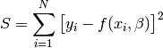
where the experimental data is expressed as 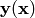 that is
discretely sampled at  points, 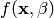 is a
model function, and
points, 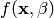 is a
model function, and  is a set of adjustable parameters in
the model. For a simple linear model of data, for example, 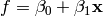, but the model can be arbitrary complex. There
is good statistical justification for using this approach, and many
existing tools for helping to find the minimal values of 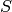. These
justifcations are not without criticism or caveats, but we’ll leave that
aside for now.
is a set of adjustable parameters in
the model. For a simple linear model of data, for example, 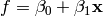, but the model can be arbitrary complex. There
is good statistical justification for using this approach, and many
existing tools for helping to find the minimal values of 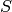. These
justifcations are not without criticism or caveats, but we’ll leave that
aside for now.
It is common to include a multiplicative factor to each component in in the least-squares equation above, so that the different data points might be given more or less weight. Again, there are several approaches to this, with one of the most common approaches to weight by the inverse of the estimated uncertainty in the data value. This then what is generally called the chi-square goodness-of-fit parameter
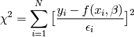
Here,  represents the uncertainty in the value of 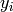.
represents the uncertainty in the value of 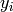.
As mentioned, the model function can be fairly complex. There is a large
literature on the cases where the model function  depends linearly on its parameters . More
generally, the model function will not depend linearly on its parameters,
and the minimization is generally referred to a ‘’non-linear least-squares
optimization’’ in the literature. All the discussion here will assume that
the models can be non-linear.
depends linearly on its parameters . More
generally, the model function will not depend linearly on its parameters,
and the minimization is generally referred to a ‘’non-linear least-squares
optimization’’ in the literature. All the discussion here will assume that
the models can be non-linear.
It is convenient to define the residual function as
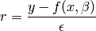
so that the sum to be minimized is a simple sum of this function, 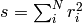. The fitting process can then be made very general with a few key components required. Specifically, for Larch, the requirements are
1. A set of Parameters,
, that are used in the model, and are to be adjusted to find the least-square value of the sum of squares of the residual. These must be parameters (discussed below) that are held in a single parameter group. That group can contain other data.
2. An objective function to calculate the residual function. This will be a Larch function that takes the parameter group described above as its first argument, and an unlimited set of optional arguments. The arrays for the data should passed in by these optional arguments. This function should return the residual array, 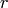 that will be minimized in the least-squares sense.
After the fit has completed, several statistical results describing the fit quality and the values and uncertainties found for the parameters will be available. Though the description so far as been somewhat formal, the process is not as hard as it sounds, and all the topics will be discussed in more detail below.
As mentioned above, the objective function needs to follow fairly strict guidelines. The first argument must be a Larch group containing all the Parameters for the mode, and the return value of the objective function must be the fit residual – the array to be minimized in the least-squares sense.
We’ll jump in with a simple example fit to a line, with this script:
# create mock data for a line
dat = group(x = linspace(0, 10, 51))
dat.y = 1.0 + 2.5 * dat.x + random.normal(size=51, scale=1)
# create a group of fit parameters
params = group(off = guess(0), slope = guess(0))
init = params.off + params.slope * dat.x
# define objective function for fit residual
def fitresid(p, data):
return data.y - (p.off + p.slope * data.x)
enddef
# perform fit
minimize(fitresid, params, args=(dat,))
final = params.off + params.slope * dat.x
Here params is the parameter group, with both params.off and params.slope as Parameters. fitresid is the objective function that calculates the model function from the values of the Parameters, and returns the residual (data - model). The minimize() function does the actual fit, and will call the objective function many times with different (and generally improved) values for the parameters. Of course, there are faster and more statistically sound methods for determining a linear trend in a set of data, but the point of this example is to illustrate the mechanisms for doing more complex, non-linear modeling of data.
The parameters used in the fitting model are all meant to be continuous variables – floating point numbers. In general, the fitting procedure may assign any value to any parameter. In an actual fit, you may want to place some restrictions on the value a parameter can take. For example, if you’re fitting data to a line, you may want to ensure that the slope of the line is positive. For more complex cases, you might want to write a a general model describing the data, but keep some of the parameters in the model fixed.
In Larch, a Parameter is a fundamental data type. It is an object with many attributes, the most important of which is a value. A Parameter’s value can change of course – this is what will happen during a fit or refinement process. A Parameter can have many other attributes as well, as we’ll discuss throughout this section. In most cases, a Parameter can be used as a floating point number, and its value will be used.
To create a Parameter, use the param() function, which takes a value as its first argument, and a few optional keyword arguments to control whether the value should be varied in a fit or kept fixed, and setting optional upper and lower bounds for the Parameter value. In addition, an algebraic expression can be specified to create a constrained Parameter.
define a Parameter, setting some of it principle attributes
| Parameters: |
|
|---|
define a variable Parameter, setting some of it principle attributes. The arguments here are identical to param(), except that vary=True is set.
Simple examples for creating a parameter and creating an group of parameters would be:
# create some Parameters
p1 = param(5.0)
p2 = params(10, min=0, max=100, vary=True)
p3 = param(expr='1 - sqrt(p2**2)')
# create a Group of parameters
fit_params = group(p1 = p1, p2 = p2, p3 = p3,
centroid = param(99, vary=False),
amp = guess(3, min=0))
Upper and lower bounds can be set on a Parameters value using the min and max arguments to param() or by setting the min and max attribute of an existing Parameter. To remove a bound, set the corresponding attribute to None.
During a fit, a Parameter’s value may approach or even equal one of the bounds, but will never violate the boundary. This is, of course, the main point of having the boundary. It should, however, be kept in mind that a Parameter with a best-fit value at or very close to a boundary may not have an accurate estimate of its uncertainty. In some cases, it may even be that a best-fit value at a boundary will prevent a reasonable estimate of the uncertainty in any of the other Parameters in the fit.
It is often useful to be able to build a fitting model in which Parameters in the model are related to one another. As a simple example, it might be useful to fit a spectrum with a sum of two lineshapes that have different centroids, but the same width. As a second example, it might be useful to fit a spectrum to a sum of two model spectra where the relative weight of the model spectra must add to 1. For each of these cases, one could simply write a model function that implemented such constraints.
Rather than trying to capture such special cases, Larch takes a more general approach, and allows Parameters to get their value from an algebraic expression. Thus, one might define an objective function for a sum of two Gaussian functions (discussed in more detail in Some Builtin Line-shape Functions), as:
def fit_2gauss(params, data):
model = params.amp1 * gaussian(data.x, params.cen1, params.wid1) + \
params.amp2 * gaussian(data.x, params.cen2, params.wid2)
return (data.y - model)
enddef
This is general and does not put any relations between the parameter values. But one can place such relations in the definitions of the parameters. Thus, one could constrain the two widths of the Gaussians to be the same value with:
params.wid1 = guess(1, min=0)
params.wid2 = param(expr='wid1')
and the value of params.wid2 will have the value as params.wid1, and won’t be an independent variable in the fit. One can use more complex expressions – any valid Larch expression is allowed. For example, one could constrain the two amplitude parameters to add to 1 and each be between 0 and 1 as:
params.amp1 = guess(0.5, min=0, max=1)
params.amp2 = param(expr='1 - amp1')
Namespaces for algebraic expressions
It’s worth asking what variables and functions are available for writing algebraic constraints. The discussion on Namespace and “Scope” inside a Procedure gives a partial explanation, but we’ll be a bit more explicit here. During a fit, the paramgroup given to minimize() will be assigned to _sys.paramGroup and will be the first place variables are looked for. The variables defined inside the objective function will be in _sys.localGroup, and which will also be searched for variables. After that, names are looked up with the normal procedures. In essence, this means that the variables and functions available for algebraic expressions during a fit include
1. First, all the other Parameters (and any other variables) defined in the parameter group for a fit.
2. All the variables defined in the objective function, including those passed in via the argument list.
3. All the normal functions and variable names available in Larch, including all the mathematical functions.
As we said, _sys.paramGroup is set during a fit. It is left set at the end of the fit – it is not cleared or reset. However, note that _sys.paramGroup may be unset or set to the wrong group (say, from a previous fit) when setting up a new fit. Of course, you can explicitly assign a group to _sys.paramGroup when setting up a fit, so that you might be able to sensibly call the objective function yourself, prior to doing a minimization.
As mentioned above, the objective function is meant to calculate the fit residual vector (data - model) given a group of parameters, and optional inputs. You’ll note that we didn’t explicitly mention the data here. This is because, in general, the data to be modeled may be quite complex. It might, for example, be contained in two or more arrays – perhaps what you want to model is the difference of two image arrays, or the fourier filtered average of ten spectra. All these are best handled through optional arguments. The objective function really only needs to have as its first argument a group containing all the parameters used in the model.
A simple model for a linear fit might look like this:
params = group(offset = param(0), slope = param(1))
def residual(pars, xdata=None, ydata=None):
model = pars.offset + pars.slope * xdata
diff = ydata - model
return diff
enddef
Here params is a Larch group containing two Parameters as defined by _math.param(), discussed above.
To actually perform the fit, the minimize() function must be called. This takes the objective function as its first argument, and the group containing all the Parameters as its second argument. As the fit proceeds, the values the Parameters will be updated and passed into the objective function. Optional arguments for the objective function can be specified as well. In addition, there are several optional arguments which are passed on to the underlying fitting function (scipy.optimize.leastsq()).
find the best-fit values for the Parameters in paramgroup such that the output array from the objective function fcn() has minimal sum-of-squares.
| Parameters: |
|
|---|
returns fit object that can be used to modify or re-run fit. Most results of interest are written to the paramgroup.
After the fit has completed, several statistics are output and available to describe the quality of the fit and the estimated values for the Parameter values and uncertainties. The main statistics are written to paramgroup.
The estimated values, uncertainties, and correlations for each varied
Parameter are written as attributes of that Parameter. Thus, after a fit,
each variable Parameter par will be updated so that par.value will
hold the estimated best-fit value, par.stderr will hold the estimated
uncertainty (1- standard error), and par.correl will hold
a dictionary of correlation values with the other variable Parameters.
standard error), and par.correl will hold
a dictionary of correlation values with the other variable Parameters.
General Fit statistics describing the quality of the fit and details about how the fit proceeded will be put into components of paramgroup, with variable names and meanings as outlines in Table of Fit Statistics. For advanced users, the full residual vector, covarance matrix, and jacobian matrix from the fit, as well as several more esoteric outputs from MINPACK’s lmdif function are put in paramgroup.lmdif.
Table of Fit Statistics. Listed are the name of the variable added to the fit paramgroup, and the statistical quantity it holds.
attribute statistical quantity residual residual array, with npts elements nfcn_calls number of calls to objective function nvarys number of independent variables nfree number of free parameters (npts - nvarys) chi_square 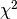, chi-square chi_reduced 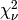, reduced chi-square message an output message about fit errorbars flag for whether errorbars were calculated lmdif Group containing output data from MINPACK-1
Larch provides a number of convenience functions for common line-shapes used in fitting of experimental data. This list is not exhaustive, but can be amended easily.
a Gaussian or normal distribution function:
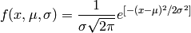
where cen is used for  .
.
a Lorentzian or Cauchy-Lorentz distribution function:
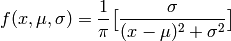
where cen is used for .
a Voigt distribution function. There seem to be many variant definitions – the one used here is given as
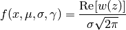
where
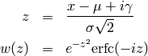
and erfc() is the complimentary error function.
As above, cen is used for here.
If gamma is left as None, it is set equal to sigma.
a pseudo-Voigt distribution function, which is a weighted sum of a
Gaussian and Lorentzian function with the same values for cen
() and sigma (), and frac setting the
Lorentzian fraction:
pvoigt(x, cen, sigma, frac) = (1-frac)*gaussian(x, cen, sigma) + frac*lorentzian(x, cen, sigma)
a Pearson-7 lineshape. This is another Voigt-like distribution function, defined as
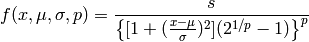
where for cen () and sigma () are as for the
above lineshapes, and expon is  , and
, and
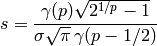
where 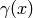 is the gamma function.
Several builtin special functions can also be used to create lineshapes useful in fitting spectra and other x-ray data. Some of these are detailed in the Table of Useful Line shapes.
Table of Useful Line shapes.
function description gaussian(x, cen, sigma) Gaussian, normal distribution. lorentzian(x, cen, sigma) Lorentzian distribution voigt(x, cen, sigma, gamma) Voigt function pvoigt(x, cen, sigma, frac) pseudo-Voigt function pearson7(x, cen, sigma, expon) Pearson-7 function arctan(x) Arc-tangent function erf(x) Error function erfc(x) Complemented Error function (1-erf(x)) gammaln(x) log of absolute value of gamma(x)
Other standard special functions (Bessel functions, Legendre polynomials, etc) can be accessed from scipy.special:
from scipy.special import j0 # Bessel function of order 0,
from scipy.special import y1 # Bessel function of second kind of order 1
A host of functions to generate other distribution functions (Pareto, Student’s T, etc) can be accessed from scipy.stats.
Here we make a simple mock data set and fit a Gaussian function to it. Though a fairly simple example, and one that is guaranteed to work well, it touches on all the concepts discussed above, and is a reasonable representation of the sort of analysis actually done when modeling many kinds of data. The script to do the fit looks like this:
# create mock data
mdat = group()
mdat.x = linspace(-10, 10, 201)
mdat.y = 1.0 + 12.0 * gaussian(mdat.x, 1.5, 2.0) + \
random.normal(size=len(mdat.x), scale=0.050)
# create a group of fit parameters
params = group(off = guess(0),
amp = guess(5, min=0),
cen = guess(2),
wid = guess(1, min=0))
init = params.off + params.amp * \
gaussian(mdat.x, params.cen, params.wid)
# define objective function for fit residual
def resid(p, data):
return data.y - (p.off + p.amp * gaussian(data.x, p.cen, p.wid))
enddef
# perform fit
minimize(resid, params, args=(mdat,))
final = params.off + params.amp * \
gaussian(mdat.x, params.cen, params.wid)
# plot results
newplot(mdat.x, mdat.y, label='data', show_legend=True)
plot(mdat.x, init, label='initial', color='black', style='dotted')
plot(mdat.x, final, label='final', color='red')
# print report of parameters, uncertainties
print fit_report(params)
This fitting script consists of several components, which we’ll go over in some detail.
1 create mock data: Here we use the builtin _math.gaussian() function to create the model function. We also add simulated noise to the model data with the random.normal() function from numpy.
2. create a group of fit parameters: Here we create a group with several components, all defined by the _math.guess() function to create variable Parameters. Two of the variables here have a lower bound set. We also calculate the initial value for the model using the initial guesses for the parameter values.
3. define objective function for fit residual: As above, this function will receive the group of fit parameters as the first argument, and may also receive other arguments as specficied in the call to _math.minimize(). This function returns the residual of the fit (data - model).
4. perform fit. Here we call _math.minimize() with arguments of the objective function, the parameter group, and any additional positional arguments to the objective function (keyword/value arguments can also be supplied). When this has completed, we calculate to model function with the final values of the parameters.
- plot results. Here we plot the data, initial, and final fits.
6. print report of parameters, uncertainties. Here we print out a report of the fit statistics, best fit values, uncertainties and correlations between variables.
The printed output from fit_report(params) will look like this:
===================== FIT RESULTS =====================
[[Statistics]]
npts, nvarys = 201, 4
nfree, nfcn_calls = 197, 26
chi_square = 0.545081
reduced chi_square = 0.002767
[[Variables]]
amp = 11.973425 +/- 0.067265 (init= 5.000000)
cen = 1.511988 +/- 0.008168 (init= 2.000000)
off = 1.002578 +/- 0.004996 (init= 0.000000)
wid = 1.996553 +/- 0.010843 (init= 1.000000)
[[Correlations]] (unreported correlations are < 0.100)
amp, wid = 0.690
amp, off = -0.670
off, wid = -0.462
=======================================================
And the plot of data and fit will look like this:
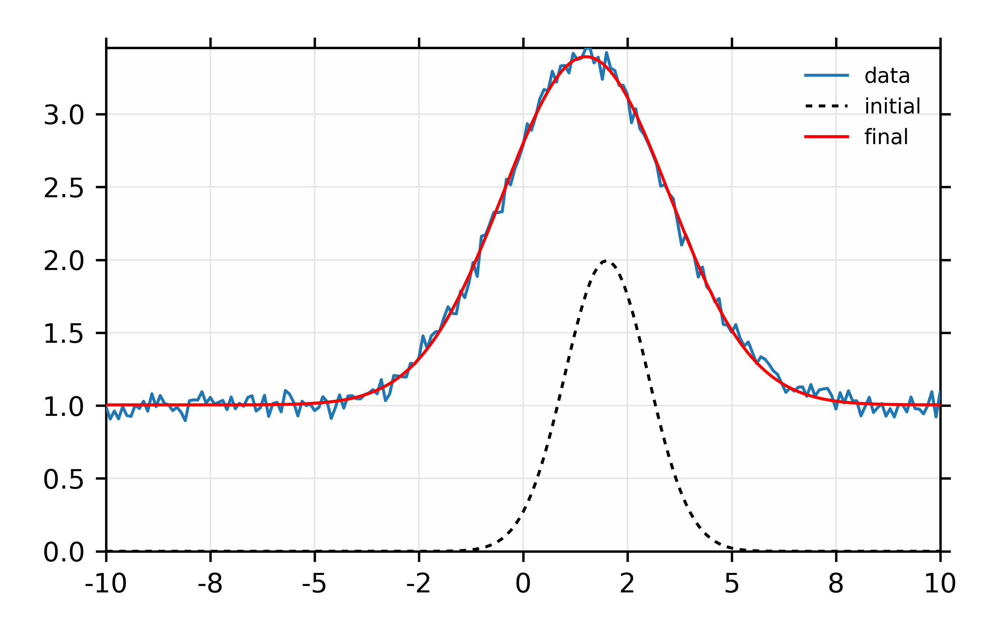This example extends the previous one by a) using data read in from a text file, b) using many more lineshapes, c) setting bounds on parameters, and d) using a simple algebraic constraint. The basic format of the above exmple is followed, but the script is a bit longer.
This example is simpler than the previous one, though still worth an explicit example. Here, we fit a XANES spectra as a linear combination of two other spectra. It is often used to compare an unknown spectra with a large selection of candidate model spectra, taking the result with lowest misfit statistics as the most likely results. Though it should be used with some caution, this represents a standard and very simple approach to XANES analysis. In the example here we only do the fit with a single pair of candidate spectra. Extending to more model spectra is left as an exercise for the reader. Other possible variations include fiting the derivatives or other spectral decompositions of the spectra.
For the analysis here, we have unknown spectra X and two model spectra A and B. first put all the data onto the same ordinate (energy) array. This does not necessarily need to be a uniform energy grid. We then use a Parameter group with two parameters. The first of these is the amplitude for model spectra A, which is set to vary and have a minimum value of 0 and a maximum of 1. The second parameter is the amplitude for model spectra B, which is constrained to be ‘1 - ampA’.